Dai picchi ai geni
PanoramicaDomande:
Obiettivi:
Come usare Galaxy?
Come derivare una lista di identificativi di geni da regioni peaks
Familiarizza con le basi di Galaxy
Impara come ottenere dati da fonti esterno
Impara come lanciare dei tool
Impara come funzionano le cronologie
Impara come creare dei flussi di lavoro
Impara come condividere il tuo lavoro
Stima del tempo: 3 oreLivello: Introduttivo IntroductoryMateriali di supporto:Pubblicato: Mar 30, 2026Ultima modifica: Mar 30, 2026Licenza: Il contenuto del tutorial è concesso in licenza Creative Commons Attribution 4.0 International License. Il framework GTN è concesso in licenza MITversion Revisione: 1
Ci siamo imbattuti in un articolo (Li et al. 2012) intitolato “L’istone acetiltransferasi MOF è un regolatore chiave della rete trascrizionale centrale delle cellule staminali embrionali”. L’articolo contiene l’analisi dei possibili geni bersaglio di un’interessante proteina chiamata Mof. I target sono stati ottenuti mediante ChIP-seq nei topi e i dati grezzi sono disponibili su [GEO] (https://www.ncbi.nlm.nih.gov/geo/query/acc.cgi?acc=GSE37268). Tuttavia, l’elenco dei geni non si trova né nei material supplementari dell’articolo, né sono parte dell’invio a GEO. La cosa più simile che abbiamo trovato è un file in GEO contenente un elenco delle regioni in cui il segnale è significativamente arricchito (i cosiddetti peaks):
| 1 | 3660676 | 3661050 | 375 | 210 | 62.0876250438913 | -2.00329386666667 |
| 1 | 3661326 | 3661500 | 175 | 102 | 28.2950833625942 | -0.695557142857143 |
| 1 | 3661976 | 3662325 | 350 | 275 | 48.3062708406486 | -1.29391285714286 |
| 1 | 3984926 | 3985075 | 150 | 93 | 34.1879823073944 | -0.816992 |
| 1 | 4424801 | 4424900 | 100 | 70 | 26.8023246007435 | -0.66282 |
Tabella 1 Sottocampione del file disponibile
L’obiettivo di questo esercizio è di trasformare questo elenco di regioni genomiche in un elenco di possibili geni bersaglio.
Commento: I risultati possono variareI risultati potrebbero essere leggermente diversi da quelli presentati in questo tutorial a causa di versioni diverse di strumenti, dati di riferimento, database esterni o a causa di processi stocastici negli algoritmi.
AgendaIn questo tutorial, ci occuperemo di:
Pretrattamenti
Pratica: Apri Galaxy
- Naviga verso un’istanza Galaxy: quella raccomandata dal tuo istruttore o una nell’elenco Istanze Galaxy all’inizio di questa pagina
Accesso o registrazione (pannello superiore)
L’interfaccia di Galaxy è composta da tre parti principali. Gli strumenti disponibili sono elencati a sinistra, la cronologia delle analisi è registrata a destra e il pannello centrale mostra gli strumenti e i set di dati.
Cominciamo con una nuova cronologia.
Pratica: Creare la cronologia
Assicurarsi di avere una cronologia di analisi vuota.
Per creare una nuova storia è sufficiente fare clic sull’icona new-history nella parte superiore del pannello della storia:
Rinomina la cronologia per facilitarne il riconoscimento
Cliccare sul titolo della cronologia (per impostazione predefinita il titolo è
Unnamed history)
- Digitare
Galaxy Introductioncome nome- Premere Invio


Caricamento dei dati
Pratica: Caricamento dati
- scaricare l’elenco delle regioni di picco (il file
GSE37268_mof3.out.hpeak.txt.gz) da GEO sul computerFare clic sul pulsante di caricamento in alto a sinistra dell’interfaccia
- Premere Scegli file locali e cercare il file sul computer
- Selezionare
intervalcome Tipo- premete Avvio
- Premere Chiudo
Attendere il completamento del caricamento. Galaxy de-compatterà automaticamente il file.
Dopo questa operazione si vedrà il primo elemento della cronologia nel pannello destro di Galaxy. Passerà attraverso gli stati grigio (preparazione/in attesa) e giallo (esecuzione) per poi diventare verde (successo):
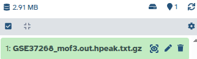
Il caricamento diretto dei file non è l’unico modo per inserire i dati in Galaxy
- Copia la posizione del collegamento
- Fare clic su galaxy-upload Carica i dati nella parte superiore del pannello degli strumenti
- Selezionare galaxy-wf-edit Incollare/recuperare i dati
- Incollare il/i link nel campo di testo
- Cambiare Type (set all): da “Auto-detect” a
interval- Premere Avvio
- Chiude la finestra
Ci sono ulteriori opzioni per gli utenti avanzati.
Commento: Formato file IntervalloIl formato Intervallo è un formato Galaxy per rappresentare intervalli genomici. È separato da tabulazioni, ma ha il requisito aggiuntivo che tre delle colonne devono essere:
- ID cromosoma
- posizione iniziale (in base 0)
- posizione finale (fine esclusiva)
è possibile specificare anche una colonna “filamento’ opzionale e utilizzare una riga di intestazione iniziale per etichettare le colonne, che non devono essere in un ordine particolare. A differenza del formato BED (vedi sotto), possono essere presenti anche colonne aggiuntive arbitrarie.
Per ulteriori informazioni sui formati utilizzabili in Galaxy, consultare la pagina Galaxy Data Formats.
Pratica: Controllare e modificare gli attributi di un file
fare clic sul file nel pannello della cronologia
vengono visualizzate alcune meta-informazioni (ad esempio, formato, database di riferimento) sul file e l’intestazione del file, oltre al numero di righe del file (48.647):
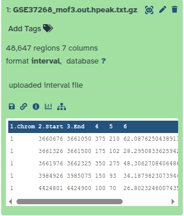
Fare clic sull’icona galaxy-eye (occhio) (Visualizza dati) nel set di dati nella cronologia
il contenuto del file è visualizzato nel pannello centrale
Fare clic sull’icona galaxy-pencil (matita) (Modifica attributi) nel vostro set di dati nella cronologia
Nel pannello centrale viene visualizzato un modulo per modificare gli attributi del set di dati
Cerca
mm9nell’attributo Database/Build e selezionaMouse July 2007 (NCBI37/mm9)(la carta ci dice che i picchi sono damm9)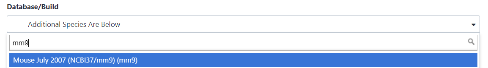
- Cliccare su Salva in alto
Aggiungere un tag chiamato
#peaksal set di dati per renderlo più facilmente rintracciabile nella cronologiaI dataset possono essere etichettati. Questo semplifica il tracciamento dei dataset nell’interfaccia di Galaxy. I tag possono contenere qualsiasi combinazione di lettere o numeri, ma non possono contenere spazi.
Per etichettare un set di dati:
- fare clic sul set di dati per espanderlo
- Cliccare su Aggiungi tag galaxy-tags
- Aggiungere tag text. I tag che iniziano con
#saranno automaticamente propagati agli output degli strumenti che utilizzano questo set di dati (vedi sotto).- Premere Invio
- verificare che il tag appaia sotto il nome del set di dati
**I tag che iniziano con
#sono speciali!Sono chiamati Name tags. La caratteristica unica di questi tag è che si propagano: se un set di dati è etichettato con un tag name, tutti i derivati (figli) di questo set di dati erediteranno automaticamente questo tag (vedi sotto). La figura seguente spiega perché questo è così utile. Si consideri la seguente analisi (i numeri tra parentesi corrispondono ai numeri dei set di dati nella figura sottostante):
- un insieme di letture forward e reverse (set di dati 1 e 2) viene mappato rispetto a un riferimento utilizzando Bowtie2 generando il set di dati 3;
- il dataset 3 è usato per calcolare la copertura delle letture usando BedTools Genome Coverage separatamente per i filamenti
+e-. Questo genera due set di dati (4 e 5 per il più e il meno, rispettivamente);- i set di dati 4 e 5 sono utilizzati come input per i set di dati Macs2 broadCall che generano i set di dati 6 e 8;
- gli insiemi di dati 6 e 8 vengono intersecati con le coordinate dei geni (insiemi di dati 9) usando BedTools Intersect generando gli insiemi di dati 10 e 11.
Ora si consideri che questa analisi è stata fatta senza tag dei nomi. Questo è mostrato sul lato sinistro della figura. È difficile individuare quali set di dati contengono dati “più” e quali “meno”. Ad esempio, il set di dati 10 contiene dati “positivi” o “negativi”? Probabilmente “meno”, ma ne siete sicuri? Nel caso di una storia di piccole dimensioni, come quella mostrata qui, è possibile tracciarla manualmente, ma con l’aumentare delle dimensioni di una storia diventa molto impegnativo.
La parte destra della figura mostra esattamente la stessa analisi, ma utilizzando i tag dei nomi. Quando è stata condotta l’analisi, i dataset 4 e 5 erano etichettati rispettivamente con
#pluse#minus. Quando sono stati utilizzati come input per Macs2, i dataset 6 e 8 li hanno ereditati automaticamente e così via… Di conseguenza, è facile tracciare entrambi i rami (più e meno) di questa analisi.Maggiori informazioni sono contenute in un tutorial dedicato ai #nametag.
Il set di dati dovrebbe ora apparire come segue nella cronologia
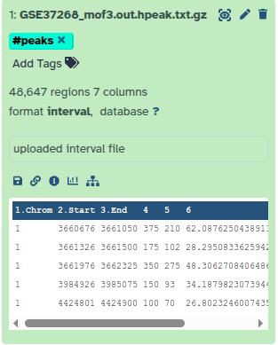

Per trovare i geni correlati a queste regioni di picco, abbiamo bisogno anche di un elenco di geni nei topi, che possiamo ottenere dall’UCSC.
Pratica: Caricamento dati da UCSC
Cercare
UCSC Mainnella barra di ricerca dello strumento (in alto a sinistra)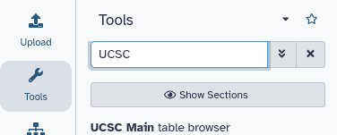
Cliccare su
UCSC MaintoolVerrà visualizzato il browser delle tabelle UCSC, che ha un aspetto simile a questo:
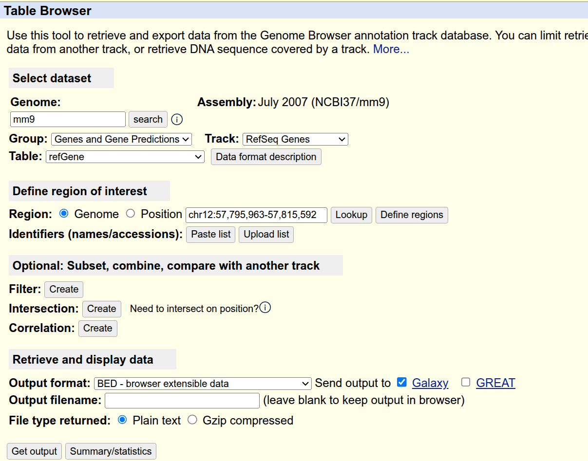
- Impostare le seguenti opzioni:
- “clade “:
Mammal- “genoma “:
Mouse- “assemblaggio “:
July 2007 (NCBI37/mm9)- “gruppo “:
Genes and Gene Predictions- “traccia “:
RefSeq Genes- “tabella “:
refGene- “regione “:
genome- “formato di uscita “:
BED - browser extensible data- “Invia l’output a “:
Galaxy(solo)Fare clic sul pulsante ottenere l’output
Verrà visualizzata la schermata successiva:
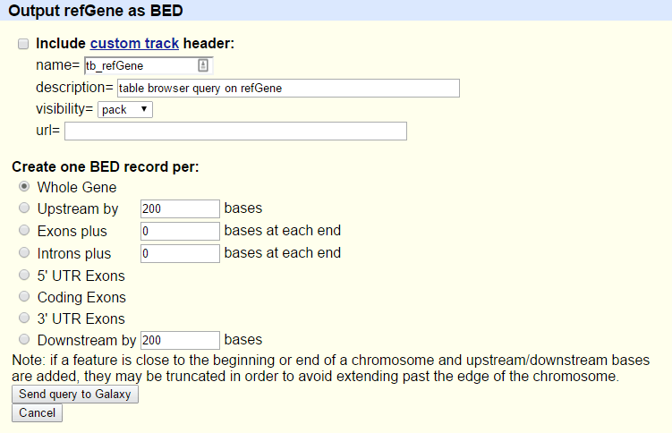
- Assicurarsi che “Crea un record BED per “ sia impostato su
Whole Gene- Fare clic sul pulsante Invia query a Galaxy
- Attendere che il caricamento sia terminato
Rinominare il nostro set di dati in qualcosa di più riconoscibile come
Genes
- Fare clic sull’icona galaxy-pencil icona della matita per il set di dati per modificarne gli attributi
- Nel pannello centrale, cambiare il campo Name in
Genes- Fare clic sul pulsante Save
- Aggiungere un tag chiamato
#genesal set di dati per renderlo più facilmente rintracciabile nella cronologia
Commento: Formato file BEDIl formato BED - Browser Extensible Data fornisce un modo flessibile per codificare le regioni geniche. Le linee BED hanno tre campi obbligatori:
- ID cromosoma
- posizione iniziale (in base 0)
- posizione finale (fine esclusiva)
Possono esserci fino a nove campi opzionali aggiuntivi, ma il numero di campi per riga deve essere coerente in ogni singolo set di dati.
è possibile trovare maggiori informazioni al riguardo su UCSC, compresa una descrizione dei campi opzionali.
Ora abbiamo raccolto tutti i dati necessari per iniziare la nostra analisi.
Parte 1: approccio ingenuo
Per prima cosa utilizzeremo un approccio “ingenuo” per cercare di identificare i geni a cui sono associate le regioni di picco. Identificheremo i geni che si sovrappongono per almeno 1bp alle regioni di picco.
Preparazione del file
Diamo un’occhiata ai nostri file per vedere cosa abbiamo qui.
Pratica: Visualizza il contenuto del file
Fare clic sull’icona galaxy-eye (occhio) del file di picco per visualizzarne il contenuto (occhio) (Visualizza dati) del file di picco per visualizzarne il contenuto
Dovrebbe essere così:
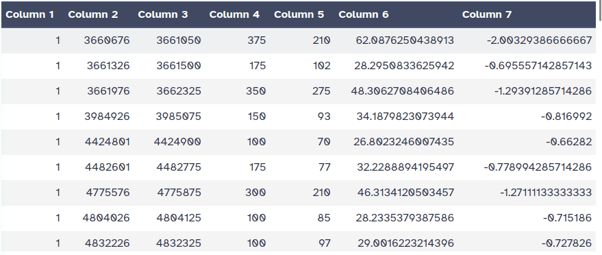
Visualizza il contenuto delle regioni dei geni da UCSC
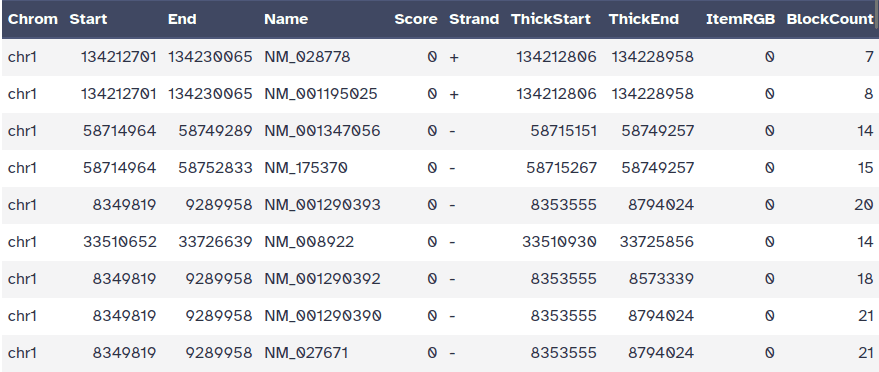
DomandaMentre il file dell’UCSC ha etichette per le colonne, il file del picco non le ha. Riuscite a indovinare il significato delle colonne?
Questo file di picco non ha un formato standard e, solo guardandolo, non è possibile scoprire il significato dei numeri nelle diverse colonne. Nel documento gli autori affermano di aver utilizzato il tool HPeak.
consultando il manuale di HPeak possiamo scoprire che le colonne contengono le seguenti informazioni:
- nome del cromosoma in base al numero
- coordinata iniziale
- coordinata finale
- lunghezza
- posizione all’interno del picco con la più alta copertura di frammenti di DNA > ipotetico (vertice)
- non rilevante
- non rilevante
Per confrontare i due file, dobbiamo assicurarci che i nomi dei cromosomi seguano lo
stesso formato. Come si può vedere, nel file di picco manca chr prima di qualsiasi
numero di cromosoma. Ma cosa succede con i cromosomi 20 e 21? Saranno invece X e Y?
Controlliamo:
Pratica: Vedi la fine del file
- Cercare lo strumento Select last lines from a dataset (tail) ( Galaxy version 9.3+galaxy1) ed eseguirlo con le seguenti impostazioni:
- “File di testo “: il nostro file di picco
GSE37268_mof3.out.hpeak.txt.gz- “Operazione “:
Keep last lines- “Numero di righe “: Scegliere un valore, ad es.
100- fare clic su Strumento di esecuzione
- Attendere che il lavoro sia terminato
Ispezionare il file attraverso l’icona galaxy-eye (occhio) icona (Visualizza dati)
Domanda
- Come si chiamano i cromosomi?
- Come si chiamano i cromosomi X e Y?
- I cromosomi sono dati solo dal loro numero. Nel file dei geni dell’UCSC, iniziavano con
chr- i cromosomi X e Y sono denominati 20 e 21
Per convertire i nomi dei cromosomi abbiamo quindi due cose da fare:
- aggiungere
chr - cambia 20 e 21 in X e Y
Pratica: Adegua i nomi dei cromosomi
- Replace Text ( Galaxy version 1.1.3) in una colonna specifica con le seguenti impostazioni:
- “File da elaborare “: il nostro file di picco
GSE37268_mof3.out.hpeak.txt.gz- “in colonna “:
1“Trova schema “:
[0-9]+Questo cercherà le cifre numeriche
“Sostituisci con “:
chr&
&è un segnaposto per il risultato della ricerca del modelloRinominare il file di output
chr prefix added.- Replace Text ( Galaxy version 1.1.3) : Eseguiamo nuovamente il tool con altre due sostituzioni
- “File da elaborare “: l’output dell’ultima esecuzione,
chr prefix added- “in colonna “:
1- param-repeat Sostituzione
- “Trova schema “:
chr20- “Sostituisci con “:
chrX- param-repeat Inserisci Sostituzione
- “Trova schema “:
chr21- “Sostituisci con “:
chrY
- Espandere le informazioni sul set di dati
- Premere l’icona galaxy-refresh (Eseguire di nuovo questo lavoro)
ispezionare il file più recente attraverso l’icona galaxy-eye (occhio). Abbiamo avuto successo?
Ora abbiamo molti file e dobbiamo fare attenzione a selezionare quelli corretti a ogni passo.
DomandaQuante regioni ci sono nel nostro file di output? È possibile fare clic sul nome dell’output per espanderlo e vedere il numero.
Dovrebbe essere uguale al numero di regioni nel vostro primo file,
GSE37268_mof3.out.hpeak.txt.gz: 48.647 Se il vostro dice 100 regioni, allora avete eseguito il programma sul fileTaile dovete eseguire nuovamente i passaggi.- Rinomina il file in qualcosa di più riconoscibile, ad esempio
Peak regions
Analisi
Il nostro obiettivo è confrontare i due file di regione (il file dei geni e il file dei picchi/peaks) per sapere quali picchi sono correlati a quali geni. Se si vuole sapere solo quali picchi si trovano all’interno dei geni (all’interno del corpo del gene) si può saltare il passaggio successivo. Altrimenti, potrebbe essere ragionevole includere la regione promoter dei geni nel confronto, ad esempio perché si vogliono includere i fattori di trascrizione negli esperimenti ChIP-seq. Non esiste una definizione rigorosa di regione promotrice, ma comunemente si utilizzano 2kb a monte del TSS (inizio della regione). Utilizzeremo lo strumento Get Flanks per ottenere le regioni da 2kb basi a monte dell’inizio del gene a 10kb basi a valle dell’inizio (12kb di lunghezza). Per fare ciò, diciamo allo strumento Get Flanks che vogliamo regioni a monte dell’inizio, con un offset di 10kb, che siano lunghe 12kb, come mostrato nel diagramma seguente.
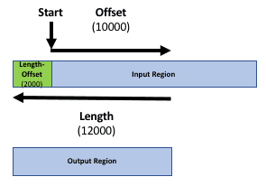
Pratica: Aggiungi la regione del promotore ai record del gene
- Get Flanks ( Galaxy version 1.0.0) restituisce le regioni di affiancamento per ogni gene, con le seguenti impostazioni:
- “Seleziona dati “: file
Genesda UCSC- “Regione “:
Around Start- “Posizione della/e regione/i di affiancamento “:
Upstream- “Offset “:
10000- “Lunghezza della/e regione/i affiancata/e “:
12000Questo strumento restituisce le regioni di affiancamento per ogni gene
confronta le righe del file BED risultante con l’input per scoprire come sono cambiate le posizioni di inizio e fine
Fare clic su Abilitazione/disabilitazione di Scratchbook nel pannello superiore
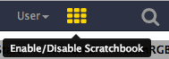
- Fare clic sull’icona galaxy-eye (occhio) dei file da ispezionare
Cliccare su Mostra/Nascondi quaderno
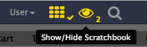
- Rinominare il set di dati per riflettere i risultati ottenuti (
Promoter regions)
l’output è costituito da regioni che partono da 2kb a monte del TSS e includono 10kb a
valle. Per le regioni di input sul filamento positivo, ad esempio chr1 134212701
134230065, si ottiene chr1 134210701 134222701. Per le regioni sul filamento
negativo, ad esempio chr1 8349819 9289958, si ottiene chr1 9279958 9291958.
Si sarà notato che il file UCSC è in formato BED e ha un database associato. Questo è
ciò che vogliamo anche per il nostro file di picco. Lo strumento Intersect che
utilizzeremo è in grado di convertire automaticamente i file di intervallo in formato
BED, ma convertiremo il nostro file di intervallo esplicitamente qui per mostrare come
si può ottenere questo risultato con Galaxy.
Pratica: Cambia formato e database
- Fare clic sull’icona galaxy-pencil (matita) nella voce della cronologia del file della regione di picco
- passa alla scheda Datatype
- Nella sezione Convert to Datatype sotto “Target datatype “ selezionare:
bed (using 'Convert Genomic Interval To Bed')- Premere Crea set di dati
- Verificare che “Database/Build” sia
mm9(la build del database per i topi utilizzata nel documento)- Rinomina il file in qualcosa di più riconoscibile, ad esempio
Peak regions BED
È il momento di trovare gli intervalli di sovrapposizione (finalmente!). Per farlo, vogliamo estrarre i geni che si sovrappongono/intersecano con i nostri picchi.
Pratica: Trova sovrapposizioni
- Intersect ( Galaxy version 1.0.0) gli intervalli di due set di dati, con le seguenti impostazioni:
- “Ritorno “:
Overlapping Intervals- “di “: il file UCSC con le regioni dei promotori (
Promoter regions)- “che intersecano “: il nostro file della regione di picco da Replace (
Peak regions BED)- “per almeno “:
1CommentoL’ordine degli input è importante! Vogliamo ottenere un elenco di geni, quindi il set di dati corrispondente con le informazioni sui geni deve essere il primo input (
Promoter regions).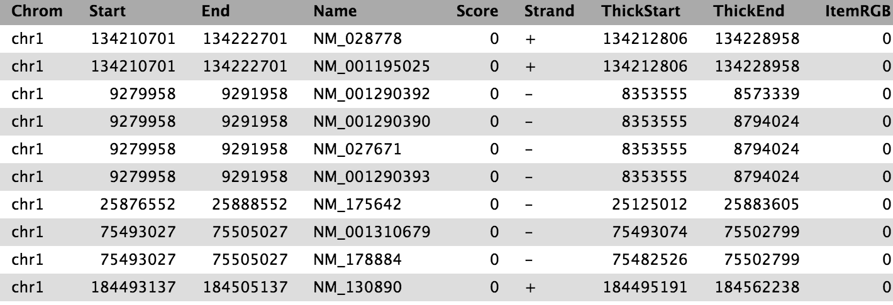
Ora abbiamo l’elenco dei geni (colonna 4) che si sovrappongono alle regioni di picco, come mostrato sopra.
Per avere una migliore visione d’insieme dei geni ottenuti, vogliamo esaminare la loro distribuzione nei diversi cromosomi. Raggrupperemo la tabella per cromosoma e conteremo il numero di geni con picchi su ciascun cromosoma
Pratica: conta i geni su diversi cromosomi
- Group dati in base a una colonna ed eseguire operazioni di aggregazione su altre colonne, con le seguenti impostazioni:
- “Seleziona dati “ al risultato dell’intersezione
- “Raggruppa per colonna “:
Column 1- Premere Operazione di inserimento e scegliere:
- “Tipo “:
Count- “Su colonna “:
Column 1- “Arrotondare il risultato al numero intero più vicino? “:
NoDomandaQuale cromosoma contiene il maggior numero di geni target?
Il risultato varia a seconda delle impostazioni, ad esempio l’annotazione può cambiare a causa degli aggiornamenti dell’UCSC. Se si segue il passaggio, con la stessa annotazione, il risultato dovrebbe essere il cromosoma 11 con 2164 geni. Per garantire la riproducibilità, è necessario conservare tutti i dati di input utilizzati nell’analisi. La ripetizione dell’analisi con lo stesso insieme di parametri, memorizzati in Galaxy, può portare a un risultato diverso se gli input sono cambiati, ad esempio l’annotazione di UCSC.
Visualizzazione
Abbiamo dei bei dati aggregati, quindi perché non disegnare un grafico a barre?
Prima di fare questo, però, dovremmo perfezionare i nostri dati raggruppati.
Si può notare che i cromosomi di topo non sono elencati nell’ordine corretto in questo set di dati (lo strumento Group ha cercato di ordinarli, ma lo ha fatto in ordine alfabetico).
Possiamo risolvere il problema eseguendo uno strumento dedicato all’ordinamento dei dati.
Pratica: Correggere l'ordine della tabella dei conteggi dei geni
- Sort ( Galaxy version 1.1.1) dati in ordine crescente o decrescente, con le seguenti impostazioni:
- “Sort Query “: risultato dell’esecuzione dello strumento Gruppo
- in param-repeat “Selezioni di colonne “
- “su colonna “:
Column 1- “in “:
Ascending order- “Flavor “:
Natural/Version sort (-V)A volte ci sono più strumenti con nomi molto simili. Se i parametri indicati nel tutorial non corrispondono a quelli visualizzati in Galaxy, provare con i seguenti:
Usare la modalità Tutorial curriculum in Galaxy e fare clic sul pulsante blu dello strumento nel tutorial per aprire automaticamente lo strumento e la versione corretti (non ancora disponibile per tutti i tutorial)
Gli strumenti vengono aggiornati frequentemente a nuove versioni. Nella vostra Galassia potrebbero essere disponibili più versioni dello stesso strumento. Per impostazione predefinita, viene visualizzata la versione più recente dello strumento. Questa potrebbe NON essere la stessa utilizzata nell’esercitazione a cui si sta accedendo. Inoltre, se si utilizza uno strumento più recente in un passaggio e si prova a utilizzare uno strumento più vecchio nel passaggio successivo… questo potrebbe fallire! Per assicurarsi di utilizzare le stesse versioni di strumenti di una determinata esercitazione, utilizzare la funzione Modalità esercitazione.
- Aprire il server Galaxy
- Fare clic sull’icona curriculum nel menu in alto, per aprire il GTN all’interno di Galaxy.
- Naviga verso il tuo tutorial
- I nomi degli strumenti nelle esercitazioni saranno pulsanti blu che apriranno lo strumento corretto per l’utente
- Nota: questo non funziona per tutte le esercitazioni (ancora)
- È possibile fare clic in qualsiasi punto dell’area grigia al di fuori del riquadro dell’esercitazione per tornare all’interfaccia analitica di Galaxy
Avviso: Non tutti i browser funzionano!
- Abbiamo riscontrato alcuni problemi con la modalità Tutorial su Safari per gli utenti Mac.
- Prova con un diverso browser se non vedi il pulsante.
Verificare che il nome completo dello strumento corrisponda a quello che si vede nel tutorial. Verificare che:
- Nome completo dello strumento:
Ordina i dati in ordine crescente o decrescente- Versione dello strumento:
1.1.1(scritto dopo il nome dello strumento)

Bene, siamo pronti a visualizzare!
Pratica: Disegna grafico a barre
- Fare clic sull’icona galaxy-barchart (visualizza) sull’output dello strumento Sort
- selezionare
Bar diagram (NVD3)- Fare clic sul pulsante « nell’angolo in alto a destra
- Scegliere un titolo in Provvedere un titolo, ad esempio
Gene counts per chromosome- passare alla scheda galaxy-chart-select-data Selezionare i dati e testare le impostazioni
Quando si è soddisfatti, fare clic sull’icona galaxy-save Salva in alto a destra del quadro principale
questo file verrà memorizzato nelle visualizzazioni salvate. In seguito sarà possibile visualizzarla, scaricarla o condividerla con altri da Dati -> Visualizzazioni nel menu superiore di Galaxy.
Estrazione del flusso di lavoro / workflow
Osservando attentamente la cronologia, si può notare che contiene tutti i passaggi della nostra analisi, dall’inizio alla fine. Costruendo questa cronologia, abbiamo costruito un record completo della nostra analisi, con Galaxy che conserva tutte le impostazioni dei parametri applicate in ogni fase. Non sarebbe bello convertire questa cronologia in un flusso di lavoro da eseguire più volte?
Galaxy lo rende molto semplice con l’opzione Extract workflow. Ciò significa che ogni
volta che si desidera creare un flusso di lavoro, è possibile eseguirlo manualmente una
volta e poi convertirlo in un flusso di lavoro, in modo che la prossima volta sarà molto
meno faticoso eseguire la stessa analisi. Inoltre, consente di condividere o pubblicare
facilmente le analisi.
Pratica: Estrarre il flusso di lavoro
Pulisci la tua cronologia: rimuovi tutti i lavori falliti (rossi) dalla tua cronologia facendo clic sul pulsante galaxy-delete.
Questo faciliterà la creazione del flusso di lavoro.
Fare clic su galaxy-gear (Opzioni cronologia) nella parte superiore del pannello cronologia e selezionare Estrai flusso di lavoro.
Il pannello centrale mostrerà il contenuto della cronologia in ordine inverso (il più vecchio in cima) e sarà possibile scegliere quali passaggi includere nel flusso di lavoro.
Sostituire il nome del flusso di lavoro con qualcosa di più descrittivo, ad esempio:
From peaks to genesSe ci sono dei passaggi che non dovrebbero essere inclusi nel flusso di lavoro, è possibile deselezionarli nella prima colonna di caselle.
poiché abbiamo eseguito alcuni passaggi specifici per il nostro file di picco personalizzato, potremmo voler escludere:
- Seleziona per ultimo tool
- tutti i passaggi Sostituisci testo tool
- Convertire gli intervalli genomici in BED
- Prendere i fianchi tool
Fare clic sul pulsante Crea flusso di lavoro in alto.
Verrà visualizzato un messaggio che indica che il flusso di lavoro è stato creato. Ma dove è andato a finire?
Fare clic su Flusso di lavoro nel menu a sinistra di Galaxy
Qui è presente un elenco di tutti i flussi di lavoro
Selezionare il flusso di lavoro appena generato e fare clic su Modifica
Si dovrebbe vedere qualcosa di simile a questo:
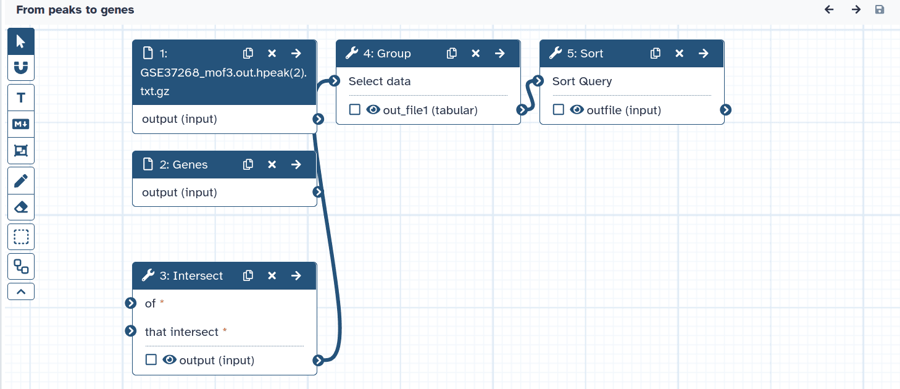
Commento: L'editor del flusso di lavoroPossiamo esaminare il flusso di lavoro nell’editor del flusso di lavoro di Galaxy. Qui è possibile visualizzare/modificare le impostazioni dei parametri di ogni fase, aggiungere e rimuovere strumenti e collegare l’uscita di uno strumento all’ingresso di un altro, il tutto in modo semplice e grafico. È inoltre possibile utilizzare questo editor per creare flussi di lavoro da zero.
Sebbene abbiamo i nostri due input nel flusso di lavoro, manca loro la connessione con il primo strumento (Intersect tool), perché non abbiamo riportato alcuni dei passaggi intermedi.
- Collegate ogni set di dati di input allo strumento Intersect tool trascinando la freccia rivolta verso l’esterno a destra del suo riquadro (che denota un output) a una freccia rivolta verso l’interno a sinistra del riquadro Intersect (che denota un input)
- Rinominare i set di dati di input in
Reference regionsePeak regions- Premere Auto Re-layout per ripulire la nostra vista
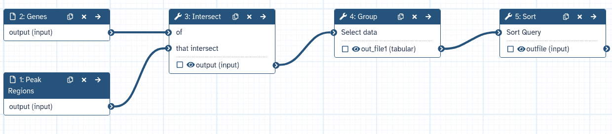
- cliccare sull’icona galaxy-save *icona *Salva** (in alto) per salvare le modifiche
Quando si esegue un flusso di lavoro, di solito l’utente è interessato principalmente al prodotto finale e non a tutte le fasi intermedie. Per impostazione predefinita, tutti gli output di un flusso di lavoro vengono mostrati, ma è possibile indicare esplicitamente a Galaxy quali output mostrare e quali nascondere per un determinato flusso di lavoro. Questo comportamento è controllato dal piccolo asterisco accanto a ogni set di dati di output:
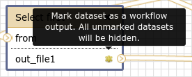
se si fa clic su questo asterisco per uno qualsiasi dei set di dati di output, verranno mostrati solo i file con l’asterisco e tutti gli output senza asterisco verranno nascosti (si noti che fare clic su tutti gli output ha lo stesso effetto di fare clic su nessuno degli output, in entrambi i casi verranno mostrati tutti i set di dati).

Ora è il momento di riutilizzare il nostro flusso di lavoro per un approccio più sofisticato.
Parte 2: approccio più sofisticato
Nella prima parte abbiamo utilizzato una definizione di sovrapposizione di 1 bp (impostazione predefinita) per identificare i geni associati alle regioni di picco. Tuttavia, i picchi potrebbero essere ampi, quindi, per ottenere una definizione più significativa, potremmo identificare i geni che si sovrappongono nel punto in cui si concentra la maggior parte delle letture, il capo del picco. Utilizzeremo le informazioni sulla posizione del vertice del picco contenute nel file del picco originale e controlleremo la sovrapposizione dei vertici con i geni.
Preparazione
Abbiamo di nuovo bisogno del nostro file di picco, ma vorremmo lavorare in una cronologia pulita. Invece di caricarlo due volte, possiamo copiarlo in una nuova cronologia.
Pratica: Copia elementi della cronologia
Creare una nuova cronologia e darle un nuovo nome come
Galaxy Introduction Part 2Per creare una nuova storia è sufficiente fare clic sull’icona new-history nella parte superiore del pannello della storia:
Fare clic su Opzioni cronologia in alto a destra della cronologia. Fare clic su Mostra cronologia affiancata
Ora si dovrebbero vedere entrambe le cronologie affiancate
- trascinare e rilasciare il file del picco modificato (
Peak regions, dopo i passaggi di sostituzione), che contiene le informazioni sulla cima, nella nuova cronologia.- Fare clic sul nome di Galaxy nella barra dei menu in alto a sinistra per tornare alla finestra di analisi
Creare il file del picco di vetta
Dobbiamo generare un nuovo file BED dal file di picco originale che contenga le
posizioni dei vertici dei picchi. L’inizio del picco è l’inizio del picco (colonna 2)
più la posizione all’interno del picco che ha la massima copertura del frammento di DNA
ipotetico (colonna 5, arrotondata al numero intero più piccolo perché alcuni picchi
cadono tra due basi). Come fine della regione del picco, definiremo semplicemente start + 1.
Pratica: Creare il file della cima del picco
- Compute on rows ( Galaxy version 2.0) con i seguenti parametri:
- “File di input “: il nostro file di picco
Peak regions(il file in formato intervallo)- *“L’input ha una riga di intestazione con nomi di colonne?”:
No- In “Espressioni “:
- param-repeat “Espressioni “
- “Aggiungi espressione “:
c2 + int(c5)- “Modalità dell’operazione “: Aggiungi
- param-repeat “Espressioni “
- “Aggiungi espressione “:
c8 + 1- “Modalità dell’operazione “: Aggiungi
Questo creerà un’ottava e una nona colonna nella nostra tabella, che utilizzeremo nel prossimo passo:
- Rinomina l’uscita
Peak summit regions
Ora tagliamo solo il cromosoma più l’inizio e la fine del vertice:
Pratica: Tagliare le colonne
- Cut colonne di una tabella con le seguenti impostazioni:
- “Tagliare colonne “:
c1,c8,c9- “Delimitato da Tab “:
Tab- “Da “:
Peak summit regionsL’output di Cut sarà in formato
tabular.
Cambiare il formato in
interval(usare l’icona galaxy-pencil) poiché è quello che si aspetta lo strumento Intersect.
- Cliccare sull’icona galaxy-pencil icona della matita per il set di dati per modificarne gli attributi
- Nel pannello centrale, fare clic su galaxy-chart-select-data *scheda *Datipi** in alto
- Nella sezione galaxy-chart-select-data Assegna tipo di dato, selezionare
intervaldal menu a discesa “Nuovo tipo”
- Suggerimento: si può iniziare a digitare il tipo di dato nel campo per filtrare il menu a discesa
- Fare clic sul pulsante Salva
L’output dovrebbe essere simile al seguente:
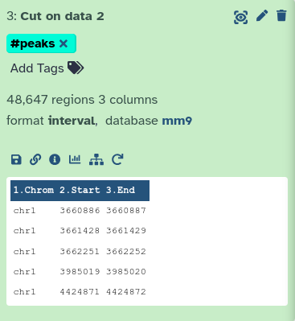
Ottenere i nomi dei geni
I geni RefSeq che abbiamo scaricato dall’UCSC contenevano solo gli identificatori RefSeq, ma non i nomi dei geni. Per ottenere un elenco di nomi di geni alla fine, utilizziamo un altro file BED dalle Librerie di dati.
CommentoCi sono diversi modi per inserire i nomi dei geni, se si ha bisogno di farlo da soli. Un modo è recuperare una mappatura attraverso Biomart e poi unire i due file (Unisci due set di dati affiancati su un campo specificato tool). Un altro metodo è quello di ottenere la tabella RefSeq completa da UCSC e convertirla manualmente in formato BED.
Pratica: Caricamento dei dati
Import
mm9.RefSeq_genes_from_UCSC.bedda Zenodo o dalla libreria dati:https://zenodo.org/record/1025586/files/mm9.RefSeq_genes_from_UCSC.bed
- Copia la posizione del collegamento
- Fare clic su galaxy-upload Carica i dati nella parte superiore del pannello degli strumenti
- Selezionare galaxy-wf-edit Incollare/recuperare i dati
- Incollare il/i link nel campo di testo
- Cambiare Genome in
mm9- Premere Avvio
- Chiude la finestra
In alternativa al caricamento dei dati da un URL o dal proprio computer, i file possono essere resi disponibili da una libreria di dati condivisi:
- Entrare in Librerie (pannello sinistro)
- Navigare verso : Cliccare su “GTN - Material”, “Introduction to Galaxy Analyses”, “From peaks to genes”, e poi “DOI: 10.5281/zenodo.1025586” o alla cartella corretta indicata dal vostro istruttore.
- selezionare i file desiderati
- Fare clic su Aggiungi alla cronologia galaxy-dropdown vicino alla parte superiore e selezionare as Datasets dal menu a tendina
- Nella finestra pop-up, scegliere
- “Seleziona cronologia “: la cronologia in cui si desidera importare i dati (o crearne una nuova)
- Cliccare su Import
Per impostazione predefinita, Galaxy prende il link come nome, quindi rinominarli.
Ispezionare il contenuto del file per verificare se contiene nomi di geni. Dovrebbe essere simile al seguente:
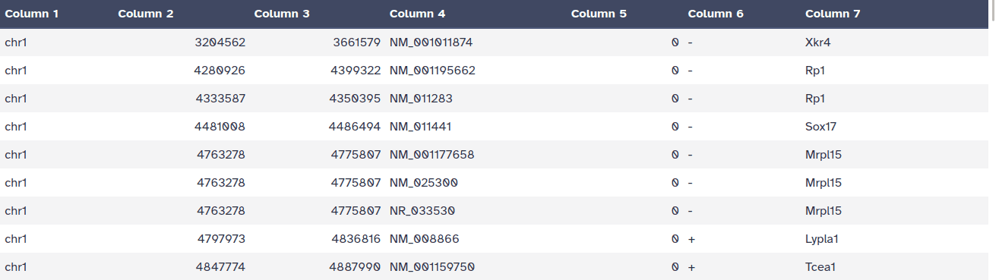
- Rinominalo
mm9.RefSeq_genes- Applica il tag
#genes
Ripetizione del flusso di lavoro
È il momento di riutilizzare il flusso di lavoro creato in precedenza.
Pratica: Eseguire un flusso di lavoro
- Aprire il menu del flusso di lavoro (barra dei menu a sinistra)
- Trovare il flusso di lavoro creato nella sezione precedente e selezionare l’opzione Esegui
- Scegliere come input il nostro file BED
mm9.RefSeq_genes(#genes) e il risultato dello strumento Cut (#peaks)Fare clic su Eseguire flusso di lavoro
I risultati dovrebbero apparire nella cronologia, ma potrebbe volerci del tempo prima che vengano completati.
Abbiamo utilizzato il nostro flusso di lavoro per eseguire nuovamente l’analisi con i picchi. Lo strumento Group ha nuovamente prodotto un elenco contenente il numero di geni trovati in ciascun cromosoma. Ma non sarebbe più interessante conoscere il numero di picchi in ogni singolo gene? Eseguiamo nuovamente il flusso di lavoro con impostazioni diverse!
Pratica: Eseguire un flusso di lavoro con le impostazioni cambiate
- Aprire il menu del flusso di lavoro (barra dei menu a sinistra)
- Trovare il flusso di lavoro creato nella sezione precedente e selezionare l’opzione Esegui
- Scegliere come input il nostro file BED
mm9.RefSeq_genes(#genes) e il risultato dello strumento Cut (#peaks)- Fare clic sul titolo dello strumento tool Gruppo per espandere le opzioni.
- Modificare le seguenti impostazioni facendo clic sull’icona galaxy-pencil (matita) a sinistra:
- “Raggruppa per colonna “:
7- In “Operazione “:
- “Su colonna “:
7- Fare clic su Eseguire flusso di lavoro
Congratulazioni! Dovresti avere un file con tutti i nomi unici dei geni e un conteggio di quanti picchi contengono.
DomandaL’elenco dei geni unici non è ordinato. Prova a ordinarlo da solo!
È possibile utilizzare lo strumento “Ordina i dati in ordine crescente o decrescente” sulla colonna 2 e “ordinamento numerico veloce”.
Condividi il tuo lavoro
Una delle caratteristiche più importanti di Galaxy si concretizza alla fine di un’analisi. Quando si pubblicano risultati eclatanti, è importante che altri ricercatori siano in grado di riprodurre l’esperimento in silico. Galaxy consente agli utenti di condividere facilmente i loro flussi di lavoro e le loro cronologie con altri.
Per condividere una cronologia, fare clic sulle opzioni della cronologia galaxy-history-options e selezionare Share or Publish. In questa pagina si possono
fare 3 cose:
-
Rendere accessibile tramite link
Questo genera un link che si può dare ad altri. Chiunque abbia questo link potrà visualizzare la propria cronologia.
-
Mettere la cronologia a disposizione del pubblico in Cronologie pubblicate
Questo non solo crea un collegamento, ma pubblica anche la cronologia. Ciò significa che la cronologia sarà elencata sotto
Data → Histories → Published Historiesnel menu in alto. -
Condivisione con i singoli utenti
Questo condividerà la cronologia solo con utenti specifici dell’istanza Galaxy.
Pratica: Condivisione della storia e del flusso di lavoro
- Condividi una delle tue storie con un tuo collega
- Vedete se riuscite a fare lo stesso con il vostro flusso di lavoro!
Trova la cronologia e/o il flusso di lavoro condiviso dal tuo collega
Le cronologie condivise con utenti specifici possono essere consultate da tali utenti con
Data → Histories → Histories shared with me.
Conclusione
trophy Avete appena eseguito la vostra prima analisi in Galaxy. Avete anche creato un flusso di lavoro dalla vostra analisi, in modo da poter ripetere facilmente la stessa analisi su altri set di dati. Inoltre, avete condiviso i vostri risultati e metodi con altri.
Hai completato il tutorial
Punti chiave
Galaxy offre un’interfaccia utente grafica facile da usare per strumenti da riga di comando spesso complessi
Galaxy conserva una cronologia completa delle analisi
I flussi di lavoro consentono di ripetere l’analisi su dati diversi
Galaxy può connettersi a fonti esterne per l’importazione e la visualizzazione dei dati
Galaxy offre modalità per condividere risultati e metodi con altri
Domande frequenti
Hai domande su questo tutorial? Dai un'occhiata alle FAQ disponibili e ai canali di supportoRiferimenti
- Li, X., L. Li, R. Pandey, J. S. Byun, K. Gardner et al., 2012 The Histone Acetyltransferase MOF Is a Key Regulator of the Embryonic Stem Cell Core Transcriptional Network. Cell Stem Cell 11: 163–178. 10.1016/j.stem.2012.04.023
Feedback
Hai usato questo materiale come istruttore? Sentiti libero di lasciarci un feedback. Com'è andata.
Hai usato questo materiale come studente? Clicca sul modulo qui sotto per lasciare un feedback.

Citare questo tutorial
- Anne Pajon, Clemens Blank, Bérénice Batut, Björn Grüning, Nicola Soranzo, Dilmurat Yusuf, Sarah Peter, Helena Rasche, Dai picchi ai geni (Galaxy Training Materials). https://training.galaxyproject.org/training-material/topics/introduction/tutorials/galaxy-intro-peaks2genes/tutorial_IT.html Online; accessed TODAY
- Hiltemann, Saskia, Rasche, Helena et al., 2023 Galaxy Training: A Powerful Framework for Teaching! PLOS Computational Biology 10.1371/journal.pcbi.1010752
- Batut et al., 2018 Community-Driven Data Analysis Training for Biology Cell Systems 10.1016/j.cels.2018.05.012
@misc{introduction-galaxy-intro-peaks2genes, author = "Anne Pajon and Clemens Blank and Bérénice Batut and Björn Grüning and Nicola Soranzo and Dilmurat Yusuf and Sarah Peter and Helena Rasche", title = "Dai picchi ai geni (Galaxy Training Materials)", year = "", month = "", day = "", url = "\url{https://training.galaxyproject.org/training-material/topics/introduction/tutorials/galaxy-intro-peaks2genes/tutorial_IT.html}", note = "[Online; accessed TODAY]" } @article{Hiltemann_2023, doi = {10.1371/journal.pcbi.1010752}, url = {https://doi.org/10.1371%2Fjournal.pcbi.1010752}, year = 2023, month = {jan}, publisher = {Public Library of Science ({PLoS})}, volume = {19}, number = {1}, pages = {e1010752}, author = {Saskia Hiltemann and Helena Rasche and Simon Gladman and Hans-Rudolf Hotz and Delphine Larivi{\`{e}}re and Daniel Blankenberg and Pratik D. Jagtap and Thomas Wollmann and Anthony Bretaudeau and Nadia Gou{\'{e}} and Timothy J. Griffin and Coline Royaux and Yvan Le Bras and Subina Mehta and Anna Syme and Frederik Coppens and Bert Droesbeke and Nicola Soranzo and Wendi Bacon and Fotis Psomopoulos and Crist{\'{o}}bal Gallardo-Alba and John Davis and Melanie Christine Föll and Matthias Fahrner and Maria A. Doyle and Beatriz Serrano-Solano and Anne Claire Fouilloux and Peter van Heusden and Wolfgang Maier and Dave Clements and Florian Heyl and Björn Grüning and B{\'{e}}r{\'{e}}nice Batut and}, editor = {Francis Ouellette}, title = {Galaxy Training: A powerful framework for teaching!}, journal = {PLoS Comput Biol} }
Riferimenti
Queste persone o organizzazioni hanno fornito supporto finanziario per lo sviluppo di questa risorsa
Congratulazioni per aver completato con successo questo tutorial!

You can use Ephemeris's
shed-tools installcommand to install the tools used in this tutorial.shed-tools install [-g GALAXY] [-a API_KEY] -t <(curl https://training.galaxyproject.org/training-material/api/topics/introduction/tutorials/galaxy-intro-peaks2genes/tutorial.json | jq .admin_install_yaml -r)Alternatively you can copy and paste the following YAML
--- install_tool_dependencies: true install_repository_dependencies: true install_resolver_dependencies: true tools: - name: text_processing owner: bgruening revisions: d698c222f354 tool_panel_section_label: Text Manipulation tool_shed_url: https://toolshed.g2.bx.psu.edu/ - name: text_processing owner: bgruening revisions: c41d78ae5fee tool_panel_section_label: Text Manipulation tool_shed_url: https://toolshed.g2.bx.psu.edu/ - name: text_processing owner: bgruening revisions: c41d78ae5fee tool_panel_section_label: Text Manipulation tool_shed_url: https://toolshed.g2.bx.psu.edu/ - name: text_processing owner: bgruening revisions: d698c222f354 tool_panel_section_label: Text Manipulation tool_shed_url: https://toolshed.g2.bx.psu.edu/ - name: text_processing owner: bgruening revisions: c41d78ae5fee tool_panel_section_label: Text Manipulation tool_shed_url: https://toolshed.g2.bx.psu.edu/ - name: column_maker owner: devteam revisions: aff5135563c6 tool_panel_section_label: Text Manipulation tool_shed_url: https://toolshed.g2.bx.psu.edu/ - name: get_flanks owner: devteam revisions: 077f404ae1bb tool_panel_section_label: Text Manipulation tool_shed_url: https://toolshed.g2.bx.psu.edu/ - name: intersect owner: devteam revisions: 69c10b56f46d tool_panel_section_label: Text Manipulation tool_shed_url: https://toolshed.g2.bx.psu.edu/